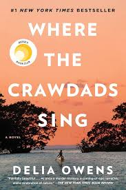

Book Reviews & Reading Journey
A psychological thriller with twists you'll never see coming.

A story of how class and social differences shape who we are, and how we connect with others.
| Book | Author | Year Read |
|---|---|---|
| Pride and Prejudice | Jane Austen | 2021 |
| A Court Of Thorns And Roses | Sarah J. Maas | 2023 |
| A Ballad of Songbirds and Snakes | Suzanne Collins | 2024 |